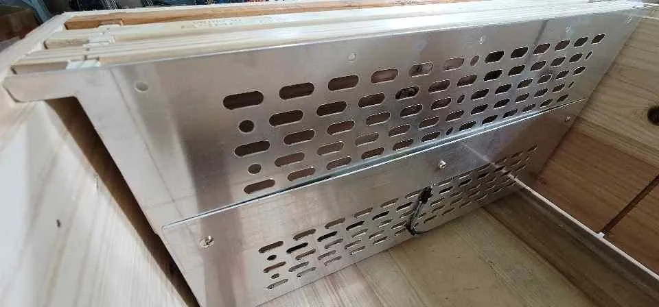
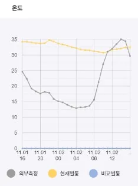

꿀벌 겨울나기, 벌통 속 일교차 줄이는 ‘가온판’
몸 떨어 열 내는 꿀벌, 농촌진흥청 스마트 벌통 시험서 꿀벌 무리 90% 이상 안정적으로 월동

꿀벌은 겨울이면 벌통 안에서 서로 몸을 붙여 공 모양의 무리인 봉구를 만들고 몸을 떨어 낸 열로 추위를 견딘다. 연합뉴스의 2023년 11월 12일 보도에 따르면 농촌진흥청 시험에서 벌통 온도를 자동으로 조절하는 장치를 쓰면 봉군(꿀벌 무리)의 90% 이상이 안정적으로 월동(겨울나기)하는 것으로 확인됐다. 이 보도는 겨울철 고온과 큰 일교차가 쉬면서 겨울을 나야 할 일벌을 움직이게 해 수명을 줄인다고 전했다.
기상 자료로 이를 따져 본 연구도 있다. 2022년 한국양봉학회 학술지 ‘Journal of Apiculture’에 실린 국가농림기상센터 이승재 등의 논문에 따르면 꿀벌 피해가 컸던 전남 영암에서는 2021년 10월 초 이상고온이 이어지다 10월 17일 하루 평균기온이 이틀 새 약 20℃에서 8℃로 떨어졌고, 12월 초에도 한낮 기온이 12℃를 넘는 날이 일주일가량 이어졌다. 연구진은 이런 바깥 기온 변화가 겨울벌(겨울을 나도록 몸이 바뀐 일벌) 생산을 방해하고 수명을 줄여 그해 겨울 집단 폐사에 일정 부분 기여했을 수 있다고 보고, 피해 지역의 기온 변화를 미리 알려 주는 ‘꿀벌 기상’ 예측·조치 안내 서비스가 필요하다고 제안했다. 자세한 내용은 자료실 소개에서 볼 수 있다.
전국 양봉장을 직접 조사한 연구도 나왔다. 2026년 국제 학술지 ‘Apidologie’에 실린 국립농업과학원 연구진의 논문에 따르면 2024~2025년 겨울 양봉장 40곳의 봉군 1만 805군 가운데 69.1%가 월동에 성공했고, 겨울 바깥 기온이 더 따뜻하고 고르게 유지된 양봉장 집단의 성공률(70.9%)이 더 춥고 기온 변동이 큰 집단(66.7%)보다 통계적으로 의미 있게 높았다. 다만 한 해 겨울만 살핀 결과이고, 기온 수준과 기온 변동 두 값을 넣어 따진 분석에서는 어느 쪽도 월동 성공률과 뚜렷한 관계를 보이지 않았다. 자세한 내용은 자료실 소개에서 볼 수 있다.
일교차와 봉구
10월은 양봉 농가가 월동 준비에 들어가는 때다. 스마트 양봉 기업 온팜(브랜드 비온팜)은 2025년 소개서에서 꿀벌이 벌통 안 온도를 높이려고 몸을 떨며 체력을 쓴다고 설명했다. 소개서에 따르면 농사가 시작되는 이른 봄에는 소모가 많고 일교차가 클수록 늘어난다.
올봄에는 지난겨울 피해를 집계한 조사 결과도 나왔다. 2026년 4월 28일 전북일보 보도에 따르면 한국양봉협회 전북특별자치도지회가 2월 28일~3월 20일 전북 지역 양봉농가 740곳을 조사한 결과 월동 전 11만 9600군이던 봉군이 월동 후 8만 3180군으로 약 30% 줄었다. 김종복 전북지회장은 겨울엔 몹시 추웠다가 봄 들어서는 일교차가 크게 벌어지는 이상기온까지 겹쳐 벌통 2~3개를 하나로 합쳐야 할 만큼 벌이 줄었다고 말했다. 자세한 내용은 자료실 소개에서 볼 수 있다.
세계일보는 2023년 11월 30일 정부와 관계기관의 꿀벌 월동 지원 소식을 전했다. 기사에 따르면 벌통을 데우는 가온판(벌통 난방판)은 벌통 내부의 일교차를 줄여 일벌 무리가 풀어지는 것을 막아 안정적인 월동을 가능하게 한다.
농촌진흥청 스마트 벌통 시험
연합뉴스는 2023년 11월 12일 농촌진흥청이 개발해 보급 중인 스마트 기기를 소개했다. 벌통을 데우는 전기 장치로, 벌통 내부의 온도와 습도를 센서로 감지해 온도를 자동으로 조절한다. 보도에 따르면 이 장치로 시험한 결과 겨울철 벌통 내 온도가 12℃ 이하로 떨어지지 않아 월동하는 봉군의 90% 이상이 안정적으로 겨울을 나는 것으로 확인됐다.
당시 조재호 농촌진흥청장도 세계일보의 2023년 11월 30일 보도에서 겨울 봉군 관리를 두고 “겨울철 봉군 세력이 건강하게 유지될 수 있도록 청에서도 사육 기술 확산에 더욱 노력하겠다”고 말했다.
220V 가온기와 직류 발열판
비온팜 2025년 소개서에 따르면 양봉 농가는 ‘가온기’라 부르는 난방 필름형 일반 전원(AC 220V) 제품을 사서 쓴다. 소개서는 일반 전기제품의 특성상 감전과 화재 위험이 있고 안전기준도 마련되지 않았다고 지적했다.
비온팜은 자사 장치가 휴대폰에서 미리 설정한 값보다 벌통 온도가 낮으면 히터를 켜 벌통 안 적정 온도(34±2℃)를 유지한다고 설명했다. 기존 제품보다 안전한 직류(DC) 전원을 쓴다고 덧붙였다. 소개서의 제품 정보를 보면 벌통 내부 온도는 10~40℃ 범위에서 설정할 수 있다. 전원 방식과 화재 위험에 대한 비온팜의 설명은 벌통 난방기 화재·감전 위험…비온팜은 220V 대신 24V 기사에서 다룬다.

사진: 비온팜이 2025년 소개서에 실은 자사 알루미늄 발열판. 벌통 안에 벌집틀과 나란히 걸려 있다 (자료: 비온팜)
그래픽: 비온팜이 홈페이지에 실은 앱 온도 그래프. 하루 동안 외부 측정 온도(회색 선)가 13℃에서 35℃까지 오르내리는 동안 벌통 안 온도(노란 선)는 31℃에서 35℃ 사이에 머물렀다 (자료: 비온팜)월동 봉군 모니터링
비온팜은 2025년 소개서의 개발 경과표에 2023년 12월 ‘꿀벌 실종 원인 분석용 월동 봉군 모니터링’을 시작했다고 적었다. 함께 적힌 기관은 국립농업과학원과 국립안동대학교다. 2025년 3월 항목에는 ‘경남 산청군 꿀벌 동면 데이터 실증 사업’이 산청군농업기술센터와 함께 적혀 있다. 비온팜 홈페이지와 2025년 소개서에는 두 사업의 결과가 실려 있지 않다.
자료: 비온팜 홈페이지(2026년 10월 8일 확인), 비온팜 2025 소개서, 세계일보(2023년 11월 30일), 연합뉴스(2023년 11월 12일), 이승재 외(2022) Journal of Apiculture, 전북일보(2026년 4월 28일), Son 외(2026) Apidologie
저작권자 © 윙윙통신 무단 전재 및 재배포 금지